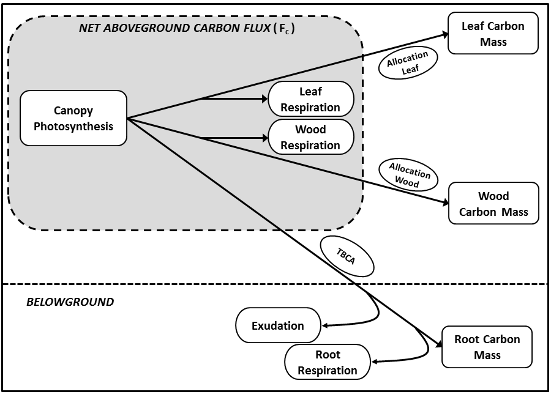
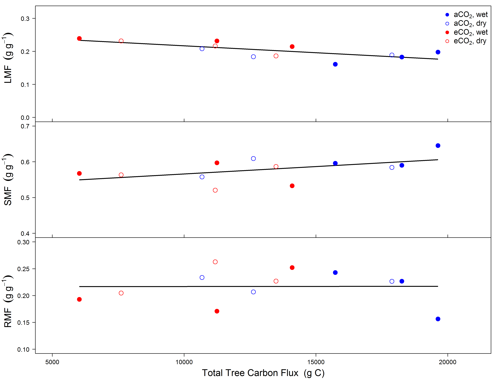
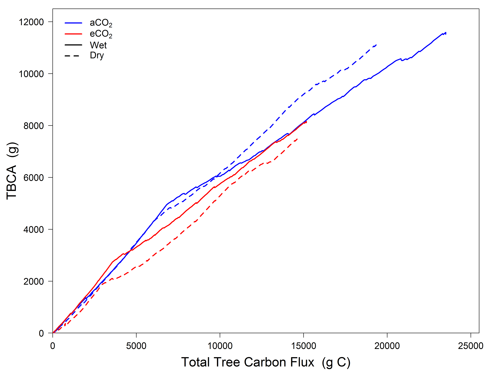

- Plant Ecophysologist
- Ecosystem Ecologist
- www.courtneycampany.com
- twitter @court_campany

Court Campany
Research Fellow, Hawkesbury Institute for the Environment
*leaflet goes here


Courtney E. Campany
Mark G. Tjoelker
Susanne von Caemmerer
Remko A. Duursma


Light gradient determines leaf properties
N and H2O both distributed to sun leaves
Maximizes photosynthesis (theoritically)

Trees can't put all leaves in the sun
Photosynthetic capacity ↓ in shade leaves


Are shade leaves optimized for low light or to respond to occasional high light
Beyond just photosynthetic capacity
gs responds slowly
gm anatomicaly constrained

Climate warming treatment
Imposed drought in final months
Heaps of gas exchange over 6 months

Measuring two canopy extremes
Leaves measured at current light environment


How do trees optimize canopy C gain
Implications for scaling leaf level measurments to the canopy

Requires knowledge of global change impacts on forest ecosystems
Allocation schemes are necessary to constrain models



Once trees are large enough, chamber floors go in and then chamber fluxes start
Allometric surveys fortnightly
Biomass harvest by structural compoents
contributes to the current uncertainty in modelling tree growth responses climate change .
turnover





